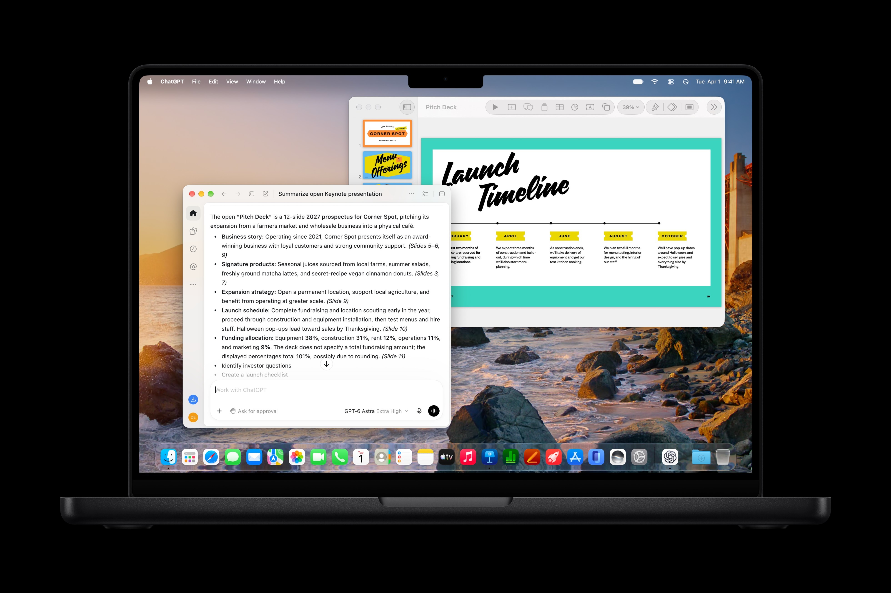
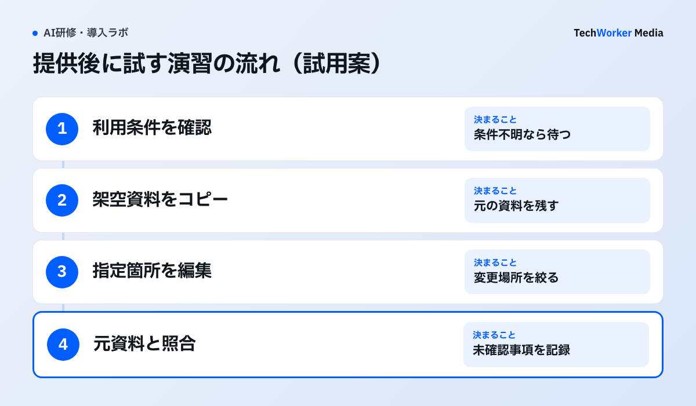

Macで資料を作る部署の研修に、AIによる編集を加えたい。そんなときは、使う機能と受講者の環境を先に分けて確かめます。同じアプリでも、内蔵のアシスタントと外部AIの接続では条件が異なります。
文書を読み、編集するAI機能を11月に提供予定
Appleは10月27日、Keynote・Pages・NumbersのAI機能を発表しました。Apple Creator Studioの更新として、11月に提供する予定です。

右奥のKeynoteの資料と左手前のChatGPTの要約を見ると、文書の内容を使ってAIが回答する様子が分かります。この画像だけでは、編集前の承認や外部AIへの接続方法は確認できません。日本語での動作を示す画面でもありません。
発表には、文書の文脈を理解する内蔵アシスタントが登場します。これに加え、外部AIが内容を読み、編集や操作を行うMCPへの対応も示されています。MCPはAIとアプリなどをつなぐための共通の仕組みです。
内蔵アシスタントとMCPで利用条件を分ける
研修の参加者名簿には使いたい機能と端末のOSを対にして残します。次の条件は10月30日に確認したAppleの発表によるものです。
| 確認する機能 | Appleが示す条件 | 研修前に決めること |
|---|---|---|
| 内蔵アシスタントのベータ版 | Apple Intelligence対応端末で、同機能を有効にする。iOS 27・iPadOS 27・macOS 27以降。米国英語のみ | 受講端末と言語を確認し、日本語の演習を実施できるか別途確かめる |
| Keynote・Pages・NumbersのMCP | macOS 27以降 | Macで使う外部AI、接続手順、会社の利用許可を確認する |
アプリに必要なOSと、新しいAI機能に必要なOSも区別します。現在のKeynoteを開けることだけで、研修の新機能を使えるとは判断できません。無料版アプリの利用と、新機能の契約条件も分けて確認します。
発表の脚注ではMCPの条件としてmacOS 27以降を挙げています。内蔵アシスタントの「米国英語のみ」という記載を、MCP全体の言語制限へ広げることはできません。一方、この脚注だけでMCPの日本語動作を保証することもできません。
日本向けの公式発表にも、11月提供予定と同じ条件が載っています。提供開始の具体的な日、会社での契約方法、接続する外部AIの条件は、採用前に確認が必要です。この記事では契約費用を試算していません。
演習は、資料のコピーで変更を確かめるところまで
提供後の最初の演習には社内で利用を許可した架空資料のコピーを使う方法を提案します。以下はTechWorkerの試用案で、自社では未検証です。

始める条件は対象端末で機能を使え、接続先を会社が許可していることです。外部AIへ渡る情報と、編集を止める方法が分からなければ、接続する演習は待ちます。まだ使えない状態を、演習が失敗した結果として採点しません。
題材には架空の商品の説明資料をKeynoteで用意します。AIへの依頼は「指定したスライドの説明文を短くする」など、変更する場所を絞ります。講師は元の資料を残し、受講者は変更した箇所を説明します。
文章が読みやすいかに加え、商品名、金額、図表の意味が変わっていないかを確かめます。外部AIに編集させる場合も、確認できた資料だけを演習の成果物にします。取引先への送信や、共有中の原本への反映は、この試用案に含めません。
記録欄の例は「機能：MCP／端末：MacのOS名と版／接続先：製品・契約・設定」です。変更の欄には「指定スライドの説明文」と書きます。確認の欄は「商品名・金額・図表」です。結果の欄に、確認できた変更と未確認事項を残します。実際に接続する製品名は試す前に記入します。
提供開始後の条件を確かめてから研修に採り入れる
今できる準備は受講端末の確認と、入力してよい資料の選定です。実際の操作手順は提供開始後の公式案内と対象端末で確かめてから教材へ載せます。
Appleの発表だけでは、会社が求める管理や承認の条件を満たすかは判定できません。外部AIの契約、データの扱い、操作の記録、接続を解除する方法を確認します。分からない項目は使える前提で埋めずに残します。
11月予定の新機能を、今日から全員が使える演習として案内することはできません。内蔵アシスタントを日本語の研修で使いたい場合も、米国英語のみという発表時点の条件を先に共有します。
TechWorkerの研修は受講者の実際の業務を1つ選び、教材の更新履歴を公開しています。教材の更新履歴で扱う内容を確認できます。今回のAppleの試用案がすでに研修へ導入済みという意味ではありません。
出典と確認した範囲
Appleの日本向け発表と、英語の原発表を確認しました。ともに2026年10月27日発表、10月30日確認です。発表時点の予定と条件を説明しています。TechWorkerでは新機能の動作や業務効果を検証していません。